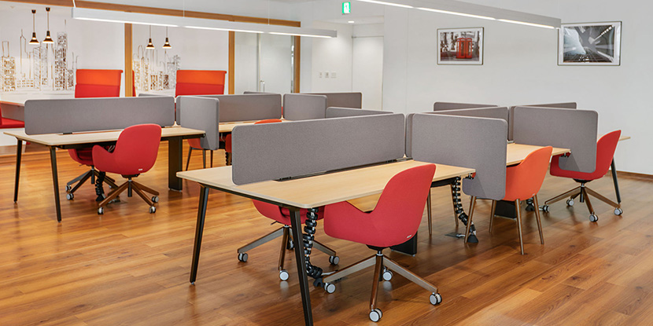

コワーキングスペース｜
効率的に、経済的に、
オフィスを使う。
オフィスの新しいカタチ。
リージャスのコワーキングスペース
(オフィス)

リージャスには、
コワーキングというオフィスの利用方法があります。
コワーキングとは、専用の個室スペースではなく、共有型のオープンスペースをデスク単位でご契約いただくオフィススペースのことです。個室のオフィスは必要がない。ワークスペースは確保したい。そのようなお客様のニーズにお勧めのサービスです。
コワーキングサービスの特徴や利点としては、単純にスペースをシェアするシェアオフィスという発想から、オープンな環境であるところからビジネスコミュニテイの形成の機会が増えるということがあります。オープンで創造的な環境をご希望される方にとっても、お勧めのサービスです。
国内最多170拠点以上
あなたとあなたの会社に
最適な
コワーキングスペースが
必ず見つかります
コワーキングスペースと
プライベートオフィスの違い
リージャスの
レンタルオフィス
とは、オフィスの内装やオフィス家具、電話やインターネット環境など、ビジネスを展開するうえで必要なオフィス設備がすでに完備されている貸事務所です。
スペースの使い方に合わせて、プライベートオフィス、コワーキングスペース、共有スペースなどが複合的に設計されています。


コワーキングスペース
は、リージャスのレンタルオフィススペースの一つであり、広い共有スペースにあるデスクを空いてる順番に使用したり、占有デスクを使用したりすることができます。
共有スペースでの業務は、開放的で、周りの方との交流などの機会を産み出します。それに対して個室タイプのオフィスは完全なプライベート空間に自社のデスクを持つことが出来るため仕事への集中力が高まります。
リージャスのコワーキングスペースの特徴
フレキシブルな契約形態
オープンなスペースに専用の固定デスクを長期、短期でご契約することが可能です。また使いたいときに一定日数だけコワーキングデスクが使える、コワーキングメンバーシップという月次契約可能なプランもあります。希望に合わせてよりリーズナブルかつフレキシブルに働くことができます。


すべてのサービスが含まれた
月額利用料
月額利用料金は定額で、インターネット、オフィス家具、複合機など必要なすべてのサービス利用料が含まれた金額です。契約⼿続きも簡単で、専任のアカウントマネージャーがサポートします。
カフェエリアを完備
ビジネスエリアに併設したカフェをご利用いただけます。集中力を保つためのリフレッシュにはもちろん、来客や他の利用者とのコミュニケーションツールとしても最適です。


意欲を引き出す洗練された
コワーキングスペースのデザイン
機能的にデザインされたワークスペースは細部にわたるまで業務を円滑に進められるよう設計されています。
個室感覚のボックスシートも併設
共有のデスクスペースにはボックスシートも併設。周囲の視界を遮り、自身の業務に集中できる半個室としてご利用いただけます。
※設置状況はセンターにより異なります。事前にお問い合わせください。


価値観の近い人たちが集まる
コミュニティ
リージャスのコワーキングスペースで様々な職種の人たちが同じ場所で仕事をすることから、新しいつながりが生まれます。
リージャスのコワーキングスペースの
プラン

| リザーブドコワーキング契約者専用デスク | コワーキング・メンバーシップ月間の利用回数として5日間、 10日間まで制限があります |
|
|---|---|---|
| デスク タイプ |
専用のデスクスペースで専用の固定デスクをお使いいただけます。 | 世界中のリージャスのセンターが利用可能です。共有のデスクスペースにて空いているデスクをお使いいただけます。 |
| 事業所 として の住所 |
事業所の住所として登記などにもお使いいただけます。専用の電話番号がお使いいただけます。 | |
| 利用 時間 |
24時間365日ご利用いただけます。 | ビジネスアワーのみのご利用になります。 |
| 荷物に ついて |
専用ロッカーがあります。 | |
| セキュ リテイ |
セキュリティキーの配布により個室タイプと同等のセキュリティサービスが得られます。 | ビジネスアワーは通常オフィスと同様のセキュリティサービスが得られます。 |
| 様々な 特典 |
メンバーシップサービスが付与されます。 世界3000拠点のラウンジをご利用いただけます。 |
|
| ご利用 料金 |
インターネット、カフェの利用、事務サポートなどビジネスに必要なサービスがすべて含まれます。 | |
※上記の内容はセンターにより異なります。詳細は下記よりお問い合わせください。
国内最多170拠点以上
あなたとあなたの会社に
最適な
コワーキングスペースが
必ず見つかります
リージャスのプラン
スタートアップ・独立時の本社や支社・支店、サテライトオフィス、出張時のワークスペースや会議室利用まで、多機能的に活用できるリージャスは日本全国170拠点、世界120カ国1,100都市3,400拠点 で展開しています。

レンタルオフィス
- 専用個室（1～100名以上）や半個室タイプまで人数・スタイルに合わせて選べるオフィス
- 1時間からご利用可能、長期利用割引あり
- 24時間365日ご利用可能※
- ご利用料に
含まれる
サービス -
- オフィス家具、電話/ネット回線、Wi-Fi、カフェ、水道光熱費、清掃費など
- 日本全国170拠点以上含む世界のビジネスラウンジ利用可能
おすすめ 本社、営業所、自社専用サテライトオフィス
詳しくはこちら
コワーキングスペース
- 専有デスク
- 専用ロッカー、セキュリテイシステム完備
- 1時間からご利用可能、長期利用割引あり
- 24時間365日ご利用可能※
- ご利用料に
含まれる
サービス -
- オフィス家具、電話/ネット回線、Wi-Fi、カフェ、水道光熱費、清掃費など
- 日本全国170拠点以上含む世界のビジネスラウンジ利用可能
おすすめ 起業時の本社、コンパクトな営業所
詳しくはこちら※24時間365日ご利用に関してはセキュリティキーにて入退出可能、受付業務など一部サービスを除きます。


コワーキングスペースの
メリット

個人・法人を問わず期間単位で利用できるオフィス空間として、利用が拡大しているコワーキングスペース。
利用するメリットを
ご紹介します。
低コストで作業環境を確保できる
一般的な賃貸のオフィスを構える場合、初期費用や環境整備の時間がかかりますが、コワーキングスペースは敷金礼金などがかからず、設備投資も不要。月単位で利用できるため、人員や予算の増減に柔軟に対応できる点も魅力です。
将来的にオフィスを構えたいと考えている方にとって、初期費用をかけずにビジネスをスタートできるコワーキングスペースは優れたオフィス形態と言えるでしょう。
設備の整った
リモートワーク環境として優秀
また、人目のない自宅やプライベートの利用者がいるカフェでは集中力を保つのが難しいと感じる方も多いでしょう。
オフィスと同じような設備の整った場所で、集中して仕事を進めたい方にとって、コワーキングスペースはバランスの取れた選択肢です。
コミュニティを形成しやすい
1人で仕事に向き合うことの多い創業当初の起業家やフリーランスの方にとって、似た境遇の人たちの集まるコワーキングスペースは共にビジネスの発展を目指す仲間やビジネスパートナーと巡り合うための有益な社交ツールとなるでしょう。
多様な背景を持つビジネスパーソンが集まる創造的な環境を求めている方にとって、理想的なオフィス形態と言えます。
ここでご紹介した以外にも、一等地の住所を利用して登記できる点、会議室や事務サポートなど必要なサービスを追加できる点などもメリットとして挙げられます。
コワーキングスペースのメリットについてはこちらの記事でも詳しくご紹介しています。
合わせて読みたい：コワーキングスペース-シェアオフィス-違い
世界の
コワーキングトレンド

従来のオフィススペースに代わる費用対効果の高いワークスペースとして、注目を集めているコワーキングスペース。今、多くの企業がこのフレキシブルな働き方を取り入れています。
今、知っておくべき11のトレンドをご紹介します。
テクノロジードリブン
今後さらに、コワーキングスペースで提供されるテクノロジーは進化すると予測されています。自動チェックイン・チェックアウトシステムから、バーチャルツアー、ワイヤレスでのプレゼンテーションシステムを備えたスマート会議室まで、コワーキングスペースはよりスマートな体験を提供するようになるでしょう。
大企業にも優しい
コワーキングスペース
コワーキングスペースという新しい選択肢は、リモートで働く従業員のモチベーションと生産性を高めるという結果が出ています。コロナ禍で多くの企業がハイブリッドワークモデルを促進したことで、コワーキングスペースの稼働率は急上昇しました。
今後、企業向けのコワーキングスペースに注力するオフィスプロバイダーがますます増え、リージャスのようにオープンなワークステーションやラウンジなど持つ、よりカスタマイズされたスペースが誕生することが予想されます。
コストパフォーマンス重視
新型コロナウイルスが大流行して以来、多くの企業がハイブリッドワークモデルを取り入れ、よりフレキシブルで手軽なソリューションを従業員に提供し始めました。コワーキングスペースでは、従来の賃貸オフィス運用時にかかっていた光熱費などのコストを削減することができます。
1人あたりの料金を設定できるリージャスのコワーキングスペースを利用すれば、従業員数に応じて支出を調整することができます。従来の賃貸契約よりもはるかにシンプルで安価にオフィス利用が可能です。
拠点数増加でよりフレキシブルに
グローバルな存在感やイメージを打ち出すことも、これまで以上に簡単です。コワーキングスペースのサービスの一つに、メンバーシッププランがあります。世界No1のネットワークを誇るリージャスのメンバーになると、世界120カ国・3400拠点のコワーキングスペースを利用でき、プロフェッショナルなグローバルネットワークにもアクセスできます。
通勤時間の短縮
多くの人が徒歩や自転車で行ける、15～30分圏内のオフィスを望んでいます。コワーキングスペースなら、リモートワークの柔軟性と職場でのコラボレーション向上を両立させることができます。
SDGS 持続可能性な社会に貢献
企業は、オフィス勤務とリモートワークを組み合わせることで、交通量を減らし、二酸化炭素排出量を削減することができます。ハイブリッドワークは、持続可能な社会に貢献する一つの方法でもあるのです。
また、リモートワークはゴミの削減にもつながります。自宅でランチを取ることは使い捨てのプラスティック包装などのゴミを削減し、ビデオ会議を利用すれば紙の使用や照明機器などの電力利用をセーブすることができるでしょう。チームはオンラインで簡単にコミュニケーションをとることができ、書類もデジタルで共有することが可能です。
オンライン予約
オンライン予約システムで、ハイブリッドワークで働く従業員の管理がこれまで以上に簡単になります。企業はオンデマンドでワークスペースを見つけることができ、生産性を最大限に高めることができます。
ニッチなコワーキングスペース
ニッチなコワーキングオフィスは、特定の分野のプロフェッショナルに特化したサービスです。アーティストや女性起業家、開発者向けに、必要なものをすべて揃えた特別仕様の施設では、同じ志を持つ人々がプロフェッショナルとつながり、互いに刺激し合えるユニークなコミュニティを形成することができます。
ワークライフバランスを向上させるための追加サービス
たとえば、ペット同伴可能なスペースをはじめ、保育所やフィットネスジムの併設、キッチンスペース完備など、追加サービスを提供するワークスペースが出てくるかもしれません。
より大きなコミュニティと文化促進
コワーキングスペースには、個人的・職業的なネットワーキングの機会や、週1回のランチやヨガクラスなどのカルチャーイベントが盛りだくさんです。オフィススペースのクオリティはもちろんですが、 フレキシビリティやロケーション、カルチャー的要素などが、コワーキングスペース選ぶ際に重要な要素となっています。
デジタルノマドが世界的に増加するにつれ、より多くの人がフレキシブルなワーキングスペースの利用を希望するようになりました。今後、同じ志を持つ仲間と出会う機会を与えてくれるコワーキングスペースは、ますます注目を浴びるでしょう。
ネットワーキングや学びの場
コワーキングスペースの利用は、従業員のキャリア開発やネットワーキングの観点からも、イベントの手配にかかるコストや時間、リソースをカットできる、費用対効果の高い方法です。
リージャスは、フレキシビリティ、テクノロジー、そして、コミュニティや文化の醸成が、コワーキングスペースの普及を促進する要因であると信じています。世界120カ国・3,400拠点にあるリージャスのコワーキングスペースには、これ以上ないほど働きやすい環境が整っています。
「まずはコワーキングスペースの使用感を体験してみたい」というご要望に応え、1日無料体験を実施しています。
ご自宅からのアクセスや設備、利用者の属性、周辺環境などを実際に体験いただくことで、具体的に利用シーンをイメージしていただけます。
本プログラムは予告なく終了となる場合がございますので、お早めにご利用ください。
各地のコワーキングスペースを探す

リージャスは日本全国に170以上の
コワーキングスペースを展開しています。

東京のコワーキングスペース
リージャスでは、アクセスの良いビジネス街のオフィスビルや、一帯のランドマークとなる著名なオフィスビルに、快適に利用できるコワーキングスペースを展開しています。
丸の内、大手町、有楽町、日本橋といった、大企業が軒を連ねる伝統的なビジネス街から、IT関連企業やベンチャー企業が集中する渋谷、世界への玄関口である羽田空港まで幅広い選択肢の中からお選びいただけます。

大阪のコワーキングスペース
大阪駅・梅田エリアには合計5拠点に構え、大阪を代表する「あべのハルカス」や、難波のシンボル「なんばパークスビジネスセンター」など話題性の高いオフィスビルにも展開しています。
東京に次いで全国で2番目に地価の高い※大阪に、最小限のコスト・時間・手間で高品質な作業スペースを確保していただけます。
※出典: 2022年国土交通省 公示地価による

名古屋のコワーキングスペース
名古屋では、名古屋駅周辺や栄・丸の内など、周辺地域へのアクセスが良い主要駅を中心に14のコワーキングスペースを構えています。
名古屋駅前のシンボルタワーでありグレード・知名度・立地・設備全てが最高ランクの「大名古屋ビルヂング」や、周辺地域へのアクセスの中心地「名駅」、名古屋屈指のオフィス街である栄や丸の内などに展開。
名古屋市の中心エリアだけでなく、製造業との取引に便利な刈谷や豊田にも展開し、愛知県全域のビジネスをサポートしています。
札幌のコワーキングスペース
リージャスでは、札幌市のなかでも特にブランドの高い札幌駅周辺と、商業の集積地でもある大通エリアに計3つのコワーキングスペースを展開しています。
国内外に豊富な航路を持つ新千歳空港まで1時間以内でアクセスでき、首都圏企業の営業拠点や海外市場を見据えたスタートアップ企業などのニーズが高い札幌エリアに、快適なワーキングスペースを構えてはいかがでしょうか。

兵庫（神戸）の
コワーキングスペース
現在では、重工業・医療・IT・アパレル分野など、幅広い業種の企業がオフィスを構えています。
リージャスでは、神戸市の行政・経済の中心地である神戸・三宮エリアを中心に計4つのコワーキングスペースを展開しています。
都心を大胆に活性化していくための再開発プロジェクト「都心・三宮再整備 KOBE VISION」が進行中。いまもなお変化を続ける神戸で、ビジネスを展開してみませんか？

仙台のコワーキングスペース
仙台駅は東北新幹線（秋田新幹線・北海道新幹線直通を含む）全線が停車する主要駅。市内から仙台空港までは、仙台空港アクセス鉄道で最短17分と、マルチにアクセスできる好立地。
「せんだい都心再構築プロジェクト」が進行中で、周辺のビジネス街・商業エリアはさらに活気を増しています。企業様はもちろん、東北にクライアントを持つ弁護士など仕業の先生方にもうってつけのエリアです。
リージャスは、仙台駅をはじめ主要地下鉄駅に近いビジネスの中心地に、計6つのコワーキングスペースを運営。フレキシブルなワークスペースで、お客様のビジネスのさらなる飛躍をお手伝いします。

横浜・みなとみらいの
コワーキングスペース
2021年には、年間来街者数が約6,150万人を超え、就業者数が過去最多の約12万５千人を記録*。現在も再開発ラッシュが続くみなとみらい21地区では、企業や大学の進出が相次ぎ、新規事業所数も年々増えています。
リージャスでは、横浜駅直結の「横浜スカイビル」をはじめ、横浜ランドマークタワーなど、計９つのコワーキングスペースを展開しています。
利便性抜群の人気エリアに、リーズナブルな価格でオフィススペースを確保しませんか？
※出典: 横浜市記者発表資料（令和3年3月25日）

さいたま・大宮エリアの
コワーキングスペース
コロナ禍で東京から脱出した子連れ家族が転入したことや、さいたま市が子育て支援に力を入れていることもあり、0〜14歳の転入超過数が7年連続全国トップ*を記録しています。
東京駅・新宿駅まで電車で30分、羽田空港・成田空港までは約1時間前後と利便性が高く、多くの新幹線が乗り入れる大宮は東日本の玄関口としても知られています。
リージャスは、大宮駅西口より徒歩３〜５分圏内に、オフィス家具付き・内装工事不要でご契約後すぐにご利用いただける2つのコワーキングスペースを展開しています。
※総務省「住民基本台帳人口移動報告（令和4年結果）」

福岡・博多の
コワーキングスペース
福岡市の坪単価は年々上昇し、中でも博多区は349万2469円と県内2位に位置し、8年前に比べて約200万円上昇*しています。
リージャスでは、金融機関や商工会議所はもちろん、企業の支店等・商業施設が集まるJR博多駅を中心に、計8つのコワーキングスペースを展開。
新しいビジネスが常に生まれる街で、オフィスを構えてみてはいかがでしょうか？
※ 土地代データ 2023年現在

熊本のコワーキングスペース
リージャスは、熊本下通に面するビジネスセンターをはじめ、熊本市電や最寄りの駅から徒歩圏内でアクセスできる好立地に計３つのコワーキングスペースを構えています。
利便性と知名度の高いロケーションにオフィスを構えることは、信頼性を担保してくれます。熊本でビジネス拡大をしたい企業様、これから起業を考えている方に最適なワーキングスペースです。